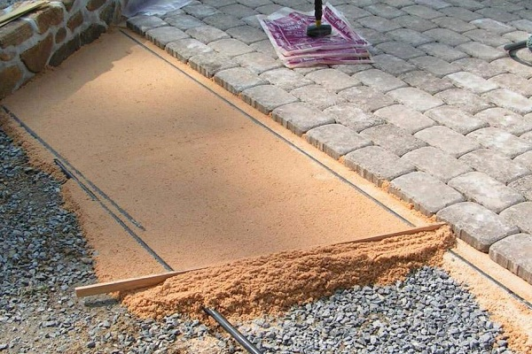
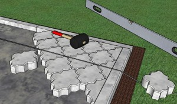

| Встановлення тротуарної плитки своїми руками. |
|
Встановлення тротуарної плитки своїми руками. Весь процес від початку і до кінця.
Як не крути, а красивий і доглянутий двір – це обличчя господарів будинку. Особливо в Чернівцях, адже Чернівці – гонорове місто, а люди у Чернівцях – вибагливі у своєму виборі щодо встановлення тротуарної плитки та й загалом благоустрою. А ландшафтний дизайн задає моду з року в рік. Тому люди все частіше є прибічниками професійних та якісних послуг. Крім того, набагато комфортніше пересуватися по рівній доріжці, ніж місити багнюку у негоду. Як ви вже зрозуміли, темою цієї статті буде встановлення тротуарів і монтаж тротуарної плитки. У цій статті ми докладно розглянемо питання, як викласти тротуарну плитку своїми руками, позначимо особливості і виділимо нюанси монтажних робіт. Укладання тротуарної плитки своїми руками: підготовка ґрунту і формування тротуарів.   Хочете виконати укладання тротуарної плитки так, щоб вона вірою і правдою служила вам довгі роки? Тоді доведеться досконально витримати всю технологію її монтажу. І почати варто з підготовчих робіт, які передбачають підготовку основи і формування майданчиків, і доріжок. Здійснюється це досить просто: по-перше, робимо розмітку – вбиваємо кілочки і натягуємо нитки, що позначають контури зон, на яких буде проводитися укладка плитки. по-друге, в межах укладання тротуарної плитки (бруківки) знімаємо верхній шар грунту на глибину 20-30см. по-третє, потрібно ретельно утрамбуватиоснову. Для цих цілей знадобиться трамбовка – виготовити її можна з великого швелера, приваривши до нього шматок металевої труби. по-четверте, на дно утрамбованих виїмок засипаємо щебінь дрібної фракції – ретельно вирівнюємо його і знову утрамбовуємо. по-п’яте, поверх щебеню насипаємо пісок і знову утрамбовуємо його самим ретельним чином.
Технологія укладання тротуарної плитки: послідовність робіт.   Щоб якісно вирівняти цементно-піщану суміш, необхідно виготовити спеціальний шаблон. Для цього відмінно підійде дерев’яна дошка, по краях, якої вирізаються прямокутники. Цими вирізами дошка встановлюється на бетонні бордюри (в Чернівцях, до речі їхній вибір є величезним), після чого при переміщенні шаблону пісок по них вирівнюється рівномірно. Після такої процедури маяки переміщуються на нове місце, а на рівній ділянці здійснюється укладка тротуарної плитки.
Вирішення питання, як класти тротуарну плитку, теж не відзначається якимись труднощами. Для здійснення цього процесу вам знадобляться лише дві речі: важкий гумовий молоток і болгарка з діамантовим диском по каменю для різки тротуарної плитки.
Як класти тротуарну плитку.  Ще до початку укладання тротуарної плитки потрібно визначитися з малюнком – справа в тому, що в більшості випадків цей облицювальний матеріал для тротуару можна монтувати різними способами. Варіанти укладання тротуарної плитки відрізняються величезною різноманітністю – її можна класти по-діагоналі, по-прямій, чергувати камінці різних форм і кольорів. Загалом структуру викладання і візерунок майбутніх тротуарів необхідно досконало вивчити.
Покласти плитку (бруківку) своїми руками досить просто, якщо є малюнок, то починати потрібно з нього. Якщо візерунок відсутній і плитка встановлюється як є, то немає ніякої різниці, звідки ви почнете. Головне – розрахувати, щоб різки було як умога менше.
|